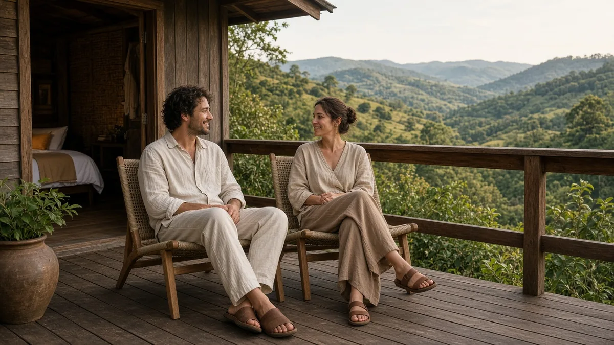
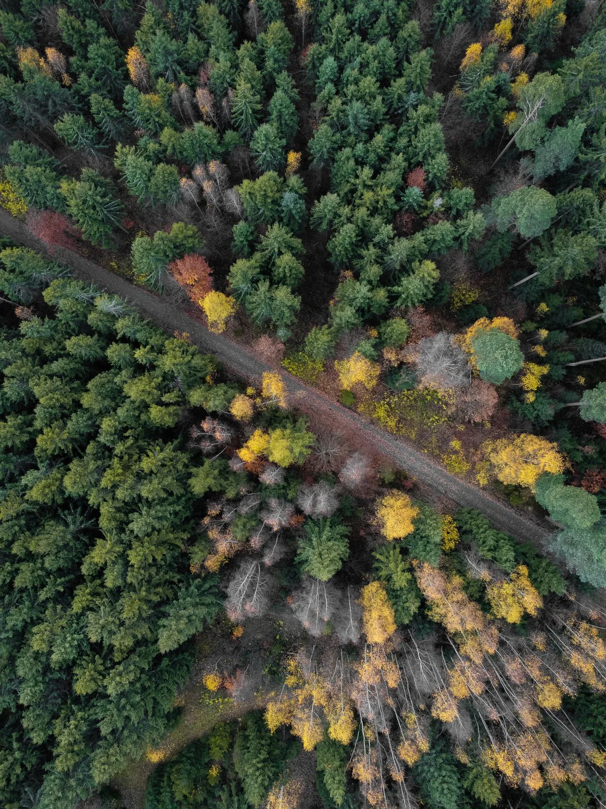
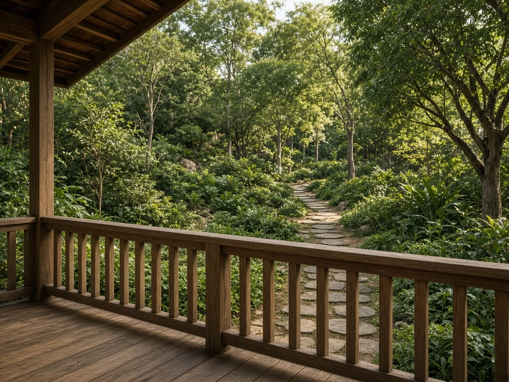
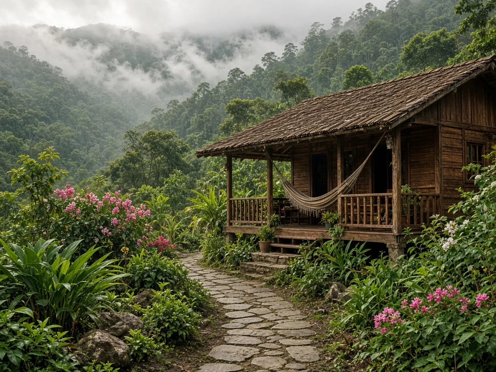
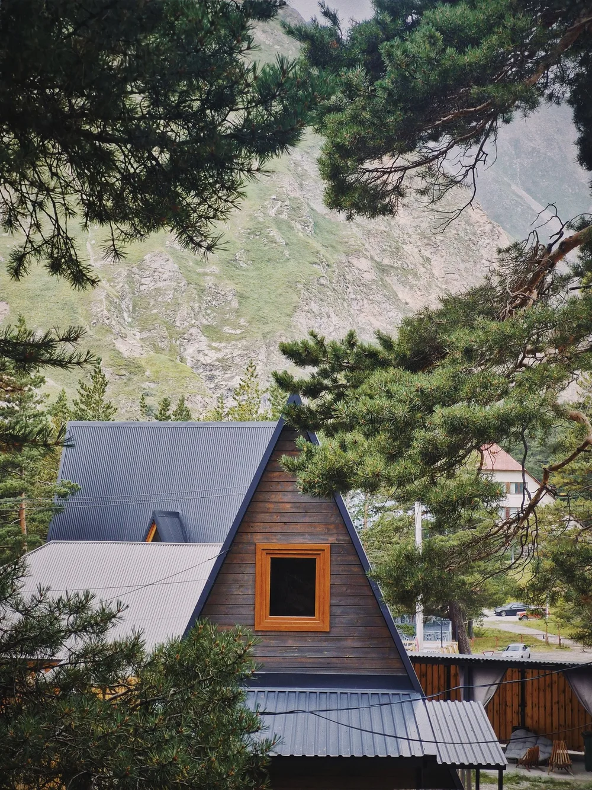
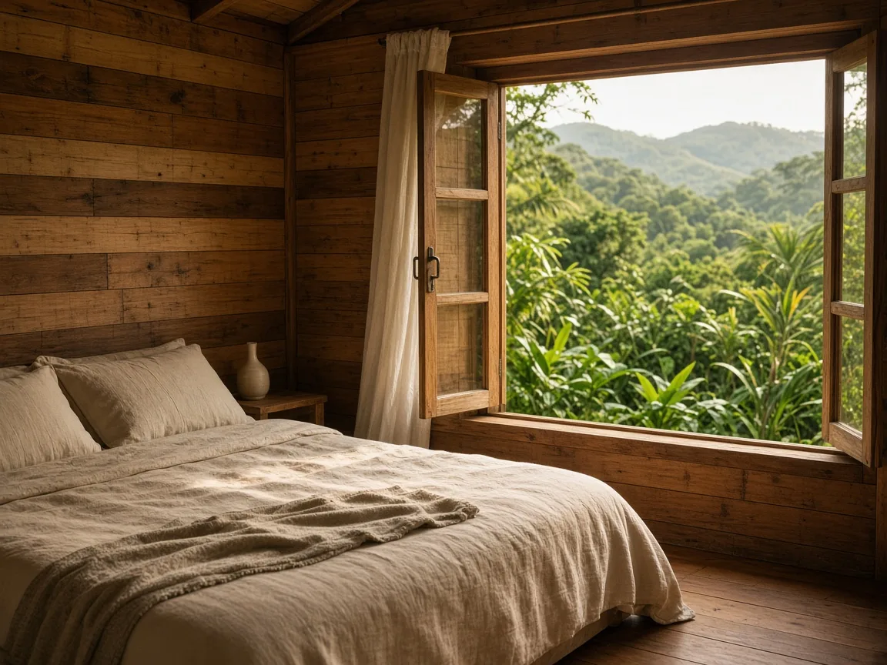
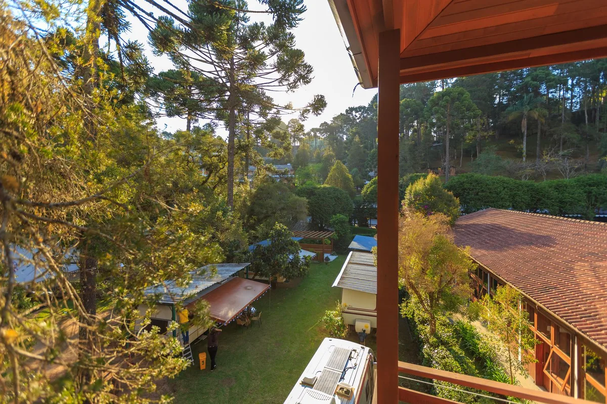
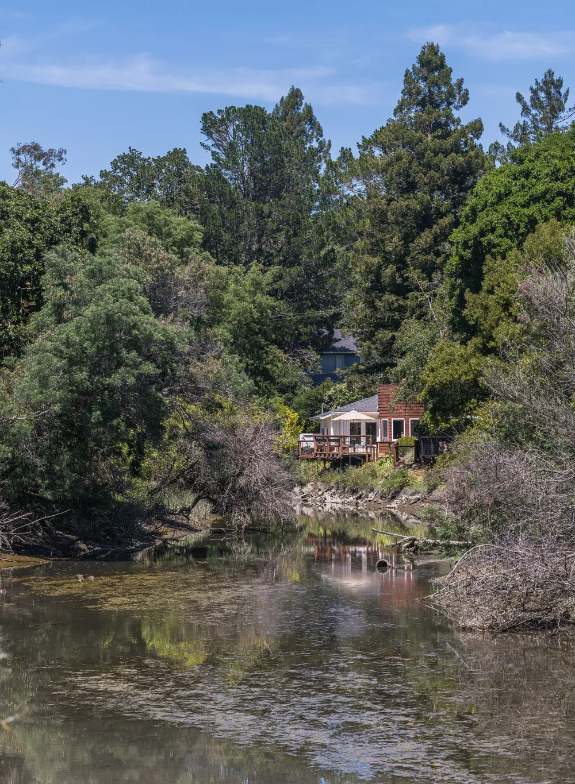

Profil A
Boutique und Romantik
Kleine, designvolle Häuser. Ein Garten, ein festlicher Saal, ein stiller Hof. Gut für Paare und für eine Hochzeit im kleinen Kreis.
Voransicht Version 4, Demo-Auswahl, 13.11.2026. Nicht öffentlich beworben. Nichts kann gebucht oder gesendet werden.
Der Treffpunkt
Lange Tafeln, warmes Licht und Menschen, die du gestern noch nicht kanntest.
Für Häuser
Gatherwynd ist kein Buchungsportal. Nils kommt zu dir ins Haus, filmt vor Ort, spricht mit deinen Gästen und zeigt den Ort und die Menschen dahinter. Ohne Glanz und ohne große Worte.
Boutique-Hotels, kleine Gästehäuser und Homestays. Gehobene, feine Häuser, die man sonst leicht übersieht. Pro Region nur wenige Häuser, damit jedes seinen eigenen Platz hat.
All-inclusive und Häuser von Ketten. Die vermarkten sich selbst. Gatherwynd bleibt bei den kleinen Häusern.
Kleine, designvolle Häuser. Ein Garten, ein festlicher Saal, ein stiller Hof. Gut für Paare und für eine Hochzeit im kleinen Kreis.
 Foto · D. Trindade
Foto · D. Trindade
Appartements oder Bungalows, Platz zum Kochen und Spielen, ein übersichtliches Gelände. Häuser, in denen eine Familie ankommen kann.

Abgelegen, ruhig, mit Blick und Privatsphäre. Ein Haus für zwei, die ein paar Tage wirklich für sich haben wollen.
Beispielbilder, KI-bearbeitet. Das mittlere Foto ist ein Symbolfoto von Denner Trindade, Pexels.
Lateinamerika, Spanien, Portugal, Québec und anderswo in Europa. Ab Dezember ist Nils unterwegs, auch in Peru.
Erzähl uns von deinem HausFür Gäste
Feste Retreats mit einem klaren Programm oder eine Auszeit, die wir in Ruhe mit dir abstimmen. Du entscheidest. Und wenn du möchtest, verbringst du die Zeit mit Nils in einem Haus, das du dir wünschst.

Feste Programme, feste Termine und klare Preise. Such dir aus, was zu dir passt, und buche ohne langes Hin und Her.
Oder schreib uns zuerst, was du suchst.
Retreat anfragenDeine Termine, dein Tempo, die Begleitung, die du dir wünschst. Wir stellen es mit dir zusammen, persönlich und diskret.
Eine persönliche Anfrage, kein festes Programm.
Deine Auszeit planenBeispielbilder, KI-bearbeitet.
Oder die Zeit mit Nils in einem Haus, das du dir wünschst.
Sag uns, wohin es gehen soll. Wir schauen gemeinsam, ob es passt.
Kleine Retreat-Center und Häuser, die Yoga, Fasten, Auszeit und Ruhe anbieten. Sachlich beschrieben. Ohne Glanz und ohne große Worte.
Orte und Programme in Ruhe anschauen. Nils will selbst hinfahren und dir zeigen, wie es dort aussieht.
Ein paar kurze Fragen zeigen, ob es passt. Ob du ein Haus führst oder eine Auszeit suchst. Wenn nicht, auch gut.
Wir melden uns mit allen Details zu Buchung und Zahlung. Persönlich, ganz ohne Eile.


Foto · J. Wolfert / Pexels
Beispielbilder, KI-bearbeitet.

Kleine Center, offene Terrassen und Zimmer mit Blick ins Grün. Kein Lärm, kein Show. Menschen, die sich Zeit nehmen.
Hotels, Retreat-Center und Eco-Lodges, die sich anfühlen wie zu Hause bei Freunden. Nils zeigt dir, wie es dort wirklich aussieht.
Beispielbilder, KI-bearbeitet.
Eco-Lodges, Hotelgärten, Zimmer mit Ausblick und Häuser im Grün. Symbolmotive, bis Nils vor Ort filmt.

Kleine Häuser, Gartenweg, Blick auf die Berge.

Foto · Dmitry A.Holz, Ruhe und ein Dach unter Bäumen.
Steinwege, Schatten und ein Platz zum Sitzen.

Leinenbett, Holz und Grün vor dem Fenster.
Foto · D. Trindade
Holzfassade, Balkon und offener Himmel.

Foto · M. BertelliHolzunterstand und Grün bis zum Horizont.
Beispielbilder, KI-bearbeitet. Die Fotos mit Namensnennung sind Symbolfotos von Pexels, nicht die realen Gatherwynd-Orte.
Demo-Auswahl
Eine hybride Demo auf der aktuellen Seite: zehn Unterkünfte und Orte aus der vorhandenen Recherche zu Peru und Costa Rica. Das ist eine Beispielauswahl, kein fertiges Angebot und keine Zusage. Die Häuser sind noch keine Partner. Nils entscheidet, welche bleiben.
Die Karten enthalten nur öffentlich belegte Eckdaten aus der Recherche. Es gibt bewusst keine Fotos der Anbieter, weil dafür die Erlaubnis der Häuser fehlt. Jede Karte führt zur offiziellen Quelle.
Nichts davon kann hier gebucht werden. Eine Zusammenarbeit beginnt erst, wenn Nils die Häuser schriftlich anfragt und sie kennengelernt hat.
Sechs Häuser mit klaren Kooperationssignalen
Oberhalb von Montezuma, Nicoya-Halbinsel
Oberhalb von Montezuma, mit Blick zur Küste. 14 Zimmer und eigene Retreatwochen. Sieben Nächte enthalten Unterkunft, drei Mahlzeiten und einen täglichen Snack.
Zur offiziellen SeiteOsa-Halbinsel, strandnah bei Puerto Jiménez
Am Strand der Osa-Halbinsel, wo Regenwald und Pazifik zusammenkommen. 13 Zimmer für bis zu 36 Gäste und drei Mahlzeiten vom eigenen Anbau. Yoga ist keine Voraussetzung für einen Aufenthalt.
Zur offiziellen SeitePavas, Carrizal, Alajuela
Oberhalb des Zentraltals, gut erreichbar vom internationalen Flughafen. Suiten, eine Villa, Panoramazimmer und leichte Zelte. Die Übernachtung enthält drei tägliche Mahlzeiten.
Zur offiziellen SeiteRumichaka bei Urubamba, Valle Sagrado
Seit Jahrzehnten geführtes Haus im Valle Sagrado, rund drei Kilometer von Urubamba. 35 Gästezimmer, vegetarische Küche und Gärten.
Zur offiziellen SeiteAtenas, Provinz Alajuela
Wellnesshotel mit 25 Zimmern. Zum Standardpaket gehören drei tägliche Mahlzeiten sowie Yoga am Morgen und am Nachmittag.
Zur offiziellen SeiteCusco, Calle Meloc und Calle Fierro
Zwei Stadthäuser nahe der Plaza de Armas, mit Restaurant und Laden. Laut Anbieter fließt die Unterstützung an die Stiftung Niños Unidos Peruanos.
Zur offiziellen SeiteVier Gemeinschaftsangebote
Insel Amantaní, Titicacasee, Region Puno
Gemeinschaftstourismus auf der Insel Amantaní, vorgestellt vom amtlichen Portal Peru Travel. Unterkunft und Verpflegung bei Gastfamilien, typisch zwei Tage und eine Nacht.
Zur Quelle (Peru Travel)Luquina Chico, Chucuito, Puno, Titicacasee
Verein für Gemeinschaftstourismus in Luquina Chico, 22 Kilometer von Puno. Unterkunft mit privatem Bad und vollständiger Verpflegung.
Zur offiziellen SeiteInneres der Osa-Halbinsel
Mehrere familiäre Unterkünfte der lokalen Organisation ADIRQ im Innern der Osa-Halbinsel. Der Komfort ist rustikal und von Haus zu Haus unterschiedlich.
Zur offiziellen SeiteBei Pisac, Valle Sagrado, Cusco
Gemeinschaftsangebot bei Pisac. Besuchende lernen traditionelle Anbautechniken und einheimische Kartoffelsorten kennen. Eine Übernachtung ist noch nicht gesichert, das Portal empfiehlt bisher einen Tagesbesuch.
Zur Quelle (Peru Travel)Die übrigen Häuser der Recherche (unter anderem Inkaterra, Titilaka, Pacuare Lodge, Lapa Rios, Harmony Hotel, Finca Rosa Blanca und Samadhi) sind in dieser Demo nicht enthalten. Sie bleiben intern in der Häuserliste, bis Nils entscheidet.
Wer sind wir
Gatherwynd
Gather heißt sammeln, zusammenkommen. Wynd ist ein altes schottisches Wort für einen schmalen Weg.
„Was braucht ein Ort, damit Menschen dort wirklich zur Ruhe kommen?“
Ich bin Nils. Ich lebe in der Nähe von Barcelona.
Lange war ich Yoga- und Shiatsu-Lehrer, Coach und Retreat-Leiter. Was bleibt, ist einfach: atmen, sich bewegen, still werden.
Ich stelle kleine Orte für eine Auszeit und die Menschen dahinter vor. Ich reise hin, filme vor Ort und zeige, was ich sehe.
Ohne Glanz. Ohne große Worte. Nur das, was da ist.
Nils-Patrick lebt in Sitges, nahe Barcelona. Er spricht Deutsch, Englisch und Spanisch. Mit Gatherwynd will er Retreat-Center, Unterkünfte in der Natur und kleine Hotels vorstellen: in Lateinamerika, in Spanien, in Portugal und anderswo in Europa. Es geht um Yoga, Meditation, Bewegung und Ruhe. Nicht mehr als nötig.
Vieles entsteht gerade erst. Das sagt er lieber gleich. Ab Dezember ist er unterwegs, auch in Peru.
Und wenn du jetzt gar nichts tun willst: Auch gut. Folge einfach mit.
Folge @GatherwyndIn Ruhe
Was Gatherwynd ist, woher der Name kommt und was Nils dorthin geführt hat. Die Untertitel sind auf Deutsch. Echtes Video, Nils selbst.
Interviewer-Stimme KI-generiert
Gatherwynd soll der Weg werden, der zusammenbringt: ehrlich gezeigte Retreat-Center, Natur-Unterkünfte und kleine Hotels, mit zwei Wegen für Gäste und einem klaren Gegenüber für die Häuser.

Foto · R. So / PexelsSchreib uns
Such dir einen Weg aus. Felder mit * sind Pflicht. In dieser Voransicht wird noch nichts gesendet.
Platzhalter Datenschutzerklärung. Verantwortlich: Thomas Malyska, Fotomek, info@fotomek.de. Der vollständige Text folgt. In dieser Voransicht werden keine Angaben gespeichert oder versendet.